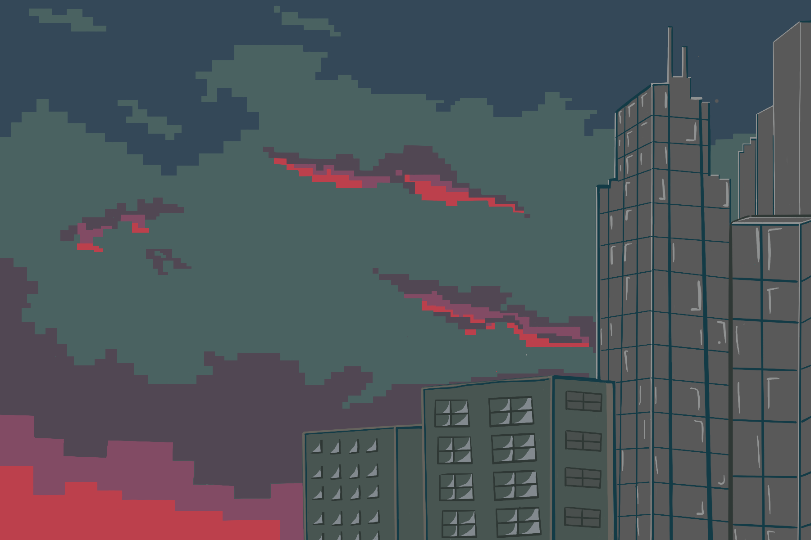
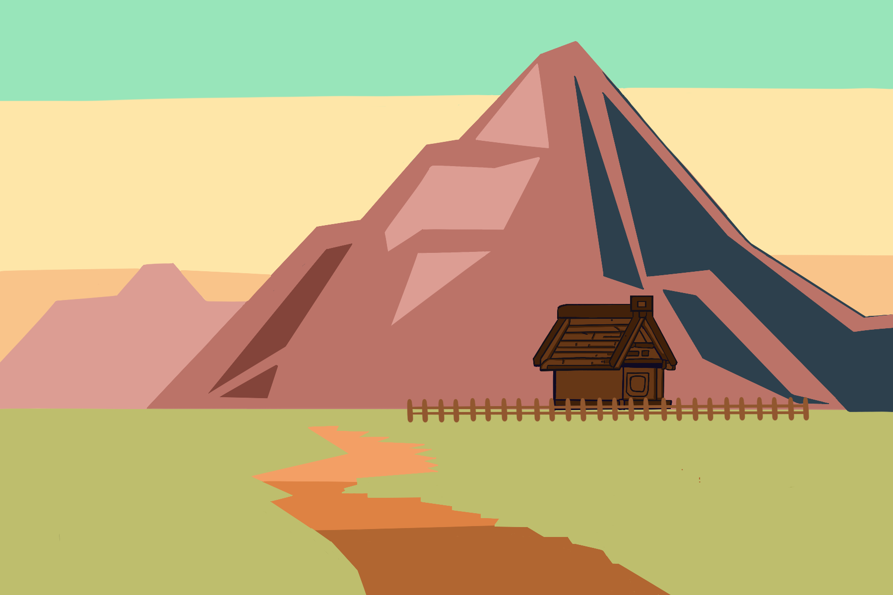
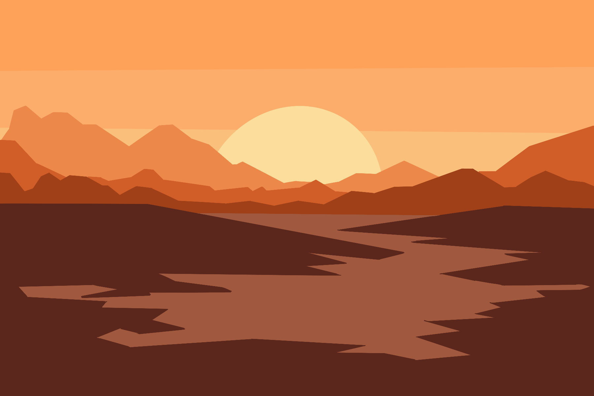
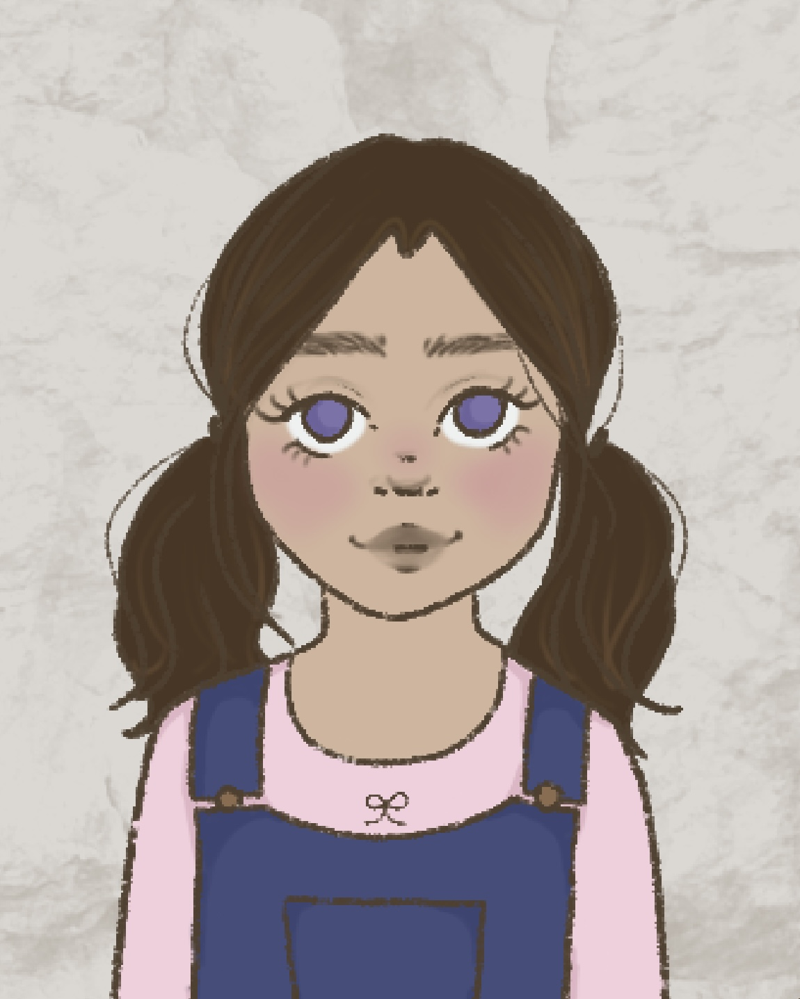
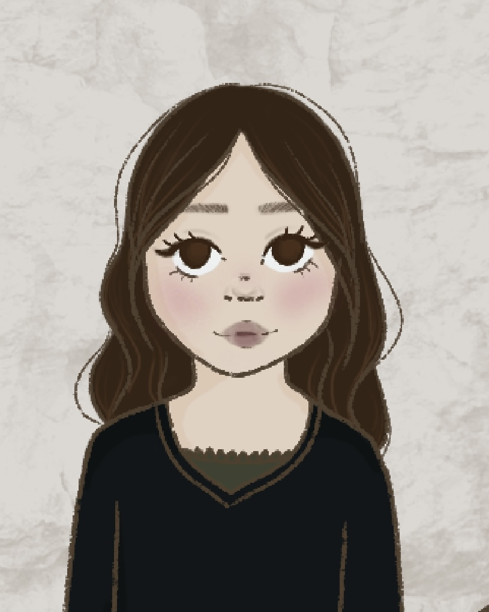
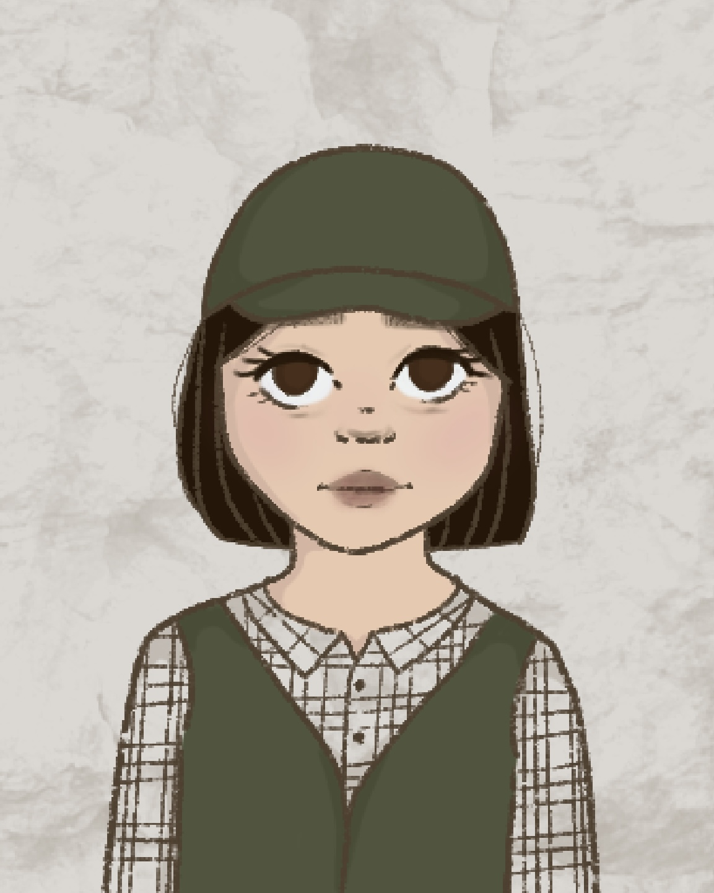
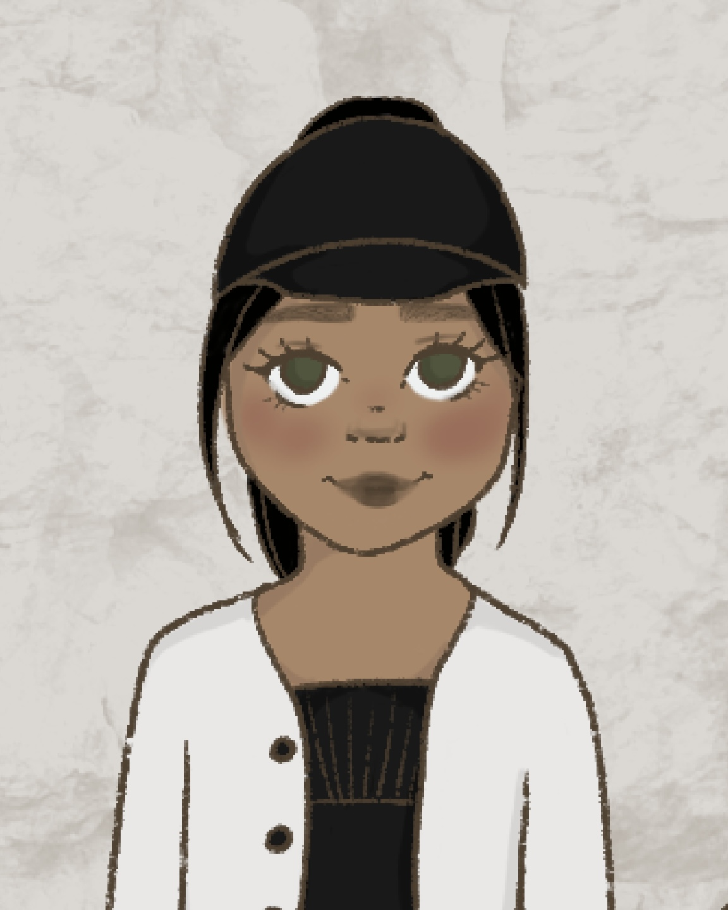
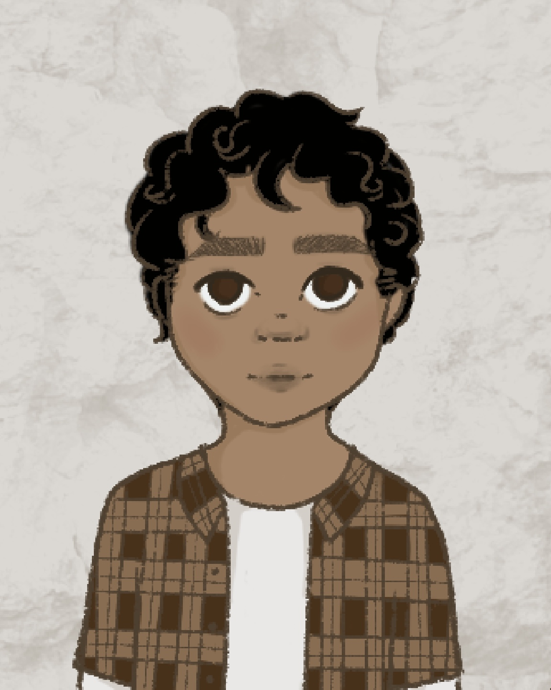

Seeds of Life begins with you, the main character! Your adventure begins in a world devastated by climate change. Countless environments and habitats have been destroyed, leaving behind very few places capable of sustaining life. You start your journey in a small village near the city. It's all you've known but it's time to see what else the world has to offer. During your adventure in the city, you meet a refugee and speak to them. They tell you of a barren wasteland nearby, devoid of any flora, just waiting for someone to bring it back to life. After checking out the area for yourself, you excitedly run back home to talk to your grandma (who has a surprisingly green thumb given the climate crisis) to learn everything you can about plant cultivation. Unfortunately, you come home to a sad sight, your grandma, who told countless tales of a world once green with life, is now on her deathbed. Before she dies, she hands you a special gift. A seed of her favorite plant that she kept all this time, never planting the seed for fear that it wouldn't sprout and go to waste. You ask her what the plant is and how to care for it, but she passes on to the next life before she can utter a word. After laying your grandmother to rest, you run back to the city to find out any information you can about plant life, in hopes someone will recognize the seed your grandmother gave you. As you talk to more and more people, they give you knowledge of plant care and gift you seeds from their homes long gone. You decide to go back to the barren wasteland to bring back life to it, one seed at a time.
The Introduction...
The Adventure Begins!

Regions
Throughout the game, you'll explore a region affected by various disasters on your quest to expand the greenery and restore the natural environments that once decorated the landscape. There are various areas within this region you can travel to which can help you understand the kind of plant life that used to live there and how they have been affected by climate change. In these areas, you can also learn how to take care of the local plants and grow them in your garden.
|

The City Covered in smog, the city is an area ripe with pollution and completely devoid of natural life. However, it serves as the refuge many people have fled to in the aftermath of the disasters and subsequent destruction of their homelands, becoming a bastion against the worsening climate. The city is where you will meet the vast majority of your companions and gather many of the supplies you’ll need to expand your garden. |

The Village This small village is the place you call home and where you begin your adventure. It is one of few settlements in this region other than the city where people live, being lucky enough to not suffer the same disasters many others have faced. Unlike the city, the village is quiet and cozy and evokes a feeling of welcomeness and the people living there are a tight knit community determined not to let their homes succumb to the elements. |

The Barren Land The barren land is a place which is described as having nothing there: no settlements, no wildlife, nothing but flat ground stretching out for miles. To many people, it is nothing more than a depressing wasteland. However, to a select few, it is the perfect place for opportunity as surprisingly, the soil there is fertile. The barren land serves as the main place where you grow your garden, slowly transforming it into a lush, enriched environment. |

The Forest The forest is a vast region which connects many of the other areas you can travel to. Once home to a thriving ecosystem of various plants and animals, it is now nothing more than a withered husk of what it once was. Much of the forest was burnt by wildfires and what remained gradually died off over time. The trees still standing are dried and hollow, and the plants and animals still clinging onto life are far and few between. |
Characters
Along your journey, you will meet many companions who can introduce you to different kinds of plants and help make your garden flourish. They are…
|

Tigerlily Beachwood Seed: Mangifera Indica (Mango) Background: Tigerlily, “Lily”, Beachwood and her family, are the last remaining survivors from their home island of Aurora Isle. As far as they know…Lily was just a kid when she still carries the soul of Aurora Isle with her and hopes to return one day to see if anything remains from her once beautiful home. |

Noel Lepe Location from: The DesertSeed: Prickly Pear Cactus Background: Although coming from the desert, Noelle's family still manages to live off the land growing whatever crops they could. Using environmentally sustainable crop choices, they take care of the land and soil that provided for them for so long. Unfortunately, their practices couldn't withstand the increasingly chaotic temperature of her region due to climate change. |

Carter Lan Location from: The MountainsSeed: Wild Garlic Background: Carter grew up in the city, but her parents had moved here from a nation filled with mountains. They always spoke fondly of their former home and though Carter wanted to travel there, she never had time. They also said that lots of wild garlic grew there, so Carter decided to try growing some herself. However, she hasn't done anything yet due to being busy. |

Joyce De La Cruz Location from: The DesertSeed: California Grape Background: Joyce's family worked in the grape fields for generations, up until there was no more water that could be used for the fields. Her family members lost their jobs when the fields could no longer produce fruit– the vines too shriveled to grow anything. She always hated eating grape seeds, so she held onto some from the last few bunches that her family members picked. |

Armando Swiftwater Location from: The DesertSeed: Desert Willow Background: Armando lost his brother in a wildfire. The climate had gotten so bad in his region that wildfires occur every year and as such his people are nomadic in nature. He loves the desert willow as it represents the beauty still able to be found in a normally barren wasteland. |